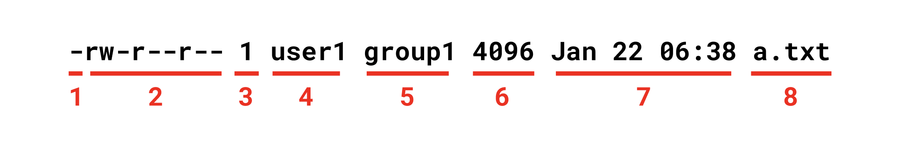
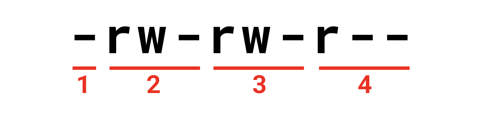

[Linux] 리눅스 권한(Permission) 관리
목차
리눅스 권한 관리
리눅스 시스템에서 사용자는 파일과 디렉토리를 소유할 수 있다. ls명령어에 -l옵션을 추가하면 파일이나 디렉토리의 접근 권한을 확인할 수 있다.
1 | $ touch a.txt |
출력 결과의 의미는 다음과 같다.

- 파일의 종류
- 권한
- 심볼릭 링크 수
- 해당 파일을 소유한 사용자
- 해당 파일을 소유한 그룹. 별도로 지정하지 않으면 파일 소유자가 속한 그룹
- 용량
- 생성일
- 파일 이름
앞의 10글자를 좀 더 자세히 살펴보자.

- 파일의 종류
- 파일 소유자의 권한
- 파일 소유자가 속한 그룹의 권한
- 그 외 사용자의 권한
파일의 종류
| 속성 | 파일 종류 |
|---|---|
| - | 일반 파일 |
| d | 디렉토리 |
| l | 심볼릭 링크 |
| c | 문자 특수 파일 |
| b | 블록 특수 파일 |
| s | 소켓 |
| p | 파이프 |
권한 속성
파일과 디렉토리에는 r(read), w(write), x(Execution) 값으로 권한을 부여할 수 있다.
| 속성 | 파일 | 디렉토리 |
|---|---|---|
| r | 파일을 열거나 읽을 수 있다. | ls 명령어로 디렉토리의 내용물을 나열할 수 있다. |
| w | 파일을 쓰거나 수정할 수 있다. | 디렉토리 내의 파일들을 생성, 삭제, 이름 변경할 수 있다. |
| x | 파일을 실행할 수 있다. | cd 명령어로 디렉토리에 들어갈 수 있다. |
권한 변경
chmod명령어를 사용하면 권한을 변경할 수 있다. 이 명령어는 루트 사용자나 파일 소유자만 실행할 수 있다.
(1) 8진법 표현
1 | # chmod 750 a.txt |
8진법 750은 2진법 111101000에 해당하며, 이는 rwxr-x---와 동일하다.
(2) 기호 표현
기호 표현은 다음과 같이 사용한다. 아래 예제는 파일 소유자에게 실행 권한을 부여한다는 의미다.
1 | # chmod u+e a.txt |
이제 사용자와 관련된 기호에 대해 살펴보자.
| 기호 | 의미 |
|---|---|
| u | user의 약자, 파일 소유자 |
| g | group의 약자, 그룹 소유자 |
| o | other의 약자, 기타 사용자 |
| a | all의 약자, u, g, o를 모두 포함 |
퍼미션 추가, 삭제, 설정과 관련된 기호는 다음과 같다.
| 기호 | 의미 |
|---|---|
| + | 뒤에 나열된 권한을 추가 |
| - | 뒤에 나열된 권한을 제거 |
| = | 뒤에 나열된 권한만 적용하고 나머지는 제거 |
몇 개의 예제를 첨부한다.
1 | # chmod o-rw a.txt |
1 | # chmod a-rwx a.txt |
1 | # chmod go=rx a.txt |
파일 소유자 변경
chown과 chgrp명령어를 사용하면 파일 소유자를 변경할 수 있다.
(1) chown
a.txt 파일의 현재 상태는 다음과 같다고 가정하자.
1 | $ ls -al |
chown명령어는 다음과 같은 형식으로 사용한다.
1 | $ chown [옵션] [소유자] [파일] |
1 | $ chown user2 a.txt |
(2) chgrp
chgrp명령어는 다음과 같은 형식으로 사용한다.
1 | chgrp [옵션] [그룹] [파일] |
1 | $ chgrp group2 a.txt |
특수 권한
리눅스는 r(read), w(write), x(execution)외에도 세 가지 특수 권한을 제공한다.
(1) Sticky bit
root나 파일 소유자만 파일 삭제를 가능하도록 한다.
설정 전 상태는 다음과 같다고 가정하자.
1 | -rwxr-xr-- 1 yologger group 76 6 5 13:38 a.txt |
Sticky Bit는 다음과 같이 설정한다.
1 | $ chmod 1755 a.txt |
상태를 다시 확인해보자.
1 | -rwxr-xr-t 1 yologger group 76 6 5 13:38 a.txt |
이제 이 파일은 소유자인 yologger나 root만 삭제할 수 있다.
(2) SetGID
파일을 소유 그룹 권한으로 실행한다.
설정 전 상태는 다음과 같다고 가정하자.
1 | -rwxr-xr-- 1 yologger group 76 6 5 13:38 a.txt |
SetGID는 다음과 같이 설정한다.
1 | $ chmod 2755 a.txt |
상태를 다시 확인해보자.
1 | -rwxr-sr-- 1 yologger group 76 6 5 13:38 a.txt |
(3) SetUID
파일을 소유자 권한으로 실행한다.
설정 전 상태는 다음과 같다고 가정하자.
1 | -rwxr-xr-- 1 yologger group 76 6 5 13:38 a.txt |
SetUID는 다음과 같이 설정한다.
1 | $ chmod 4755 a.txt |
상태를 다시 확인해보자.
1 | -rwsr-xr-- 1 yologger group 76 6 5 13:38 a.txt |